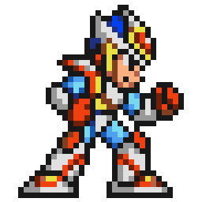

 Mega Man X2
Details
| Playtime | Not Played |
| Last Activity | Never |
| Added | 21/02/2024 3:22:45 |
| Modified | 20/05/2024 22:32:56 |
| Completion Status | Not Played |
| Library | Playnite |
| Source | |
| Platform | Nintendo SNES |
| Release Date | 16/12/1994 |
| Community Score | 84 |
| Critic Score | 82 |
| User Score | 0 |
| Genre | Platformer |
| Developer | Capcom |
| Publisher | Capcom |
| Feature | Single Player |
| Links | |
| Tag | |
Description
Mega Man X2 features much of the same action-platforming elements as the first installment of the series, following the traditional gameplay of the original Mega Man series. The player is tasked with completing a series of stages by destroying enemies, gaining various power-ups, and winning the special weapon of each stage's boss. Like the first Mega Man X, this game lets the player dash, scale walls, and obtain access to special abilities via optional pieces of armor. Mega Man X2 is graphically similar to its predecessor as well, but Capcom included the Cx4 in-cartridge enhancement chip to allow for some 3D wireframe effects. The development team was instructed to utilize this technology as much as possible when working on the game.
The presentation and gameplay of Mega Man X2 have earned the game a mostly positive critical reception. However, reviewers were dismayed by the lack of changes from the original Mega Man X. The game has since been released on various other platforms.